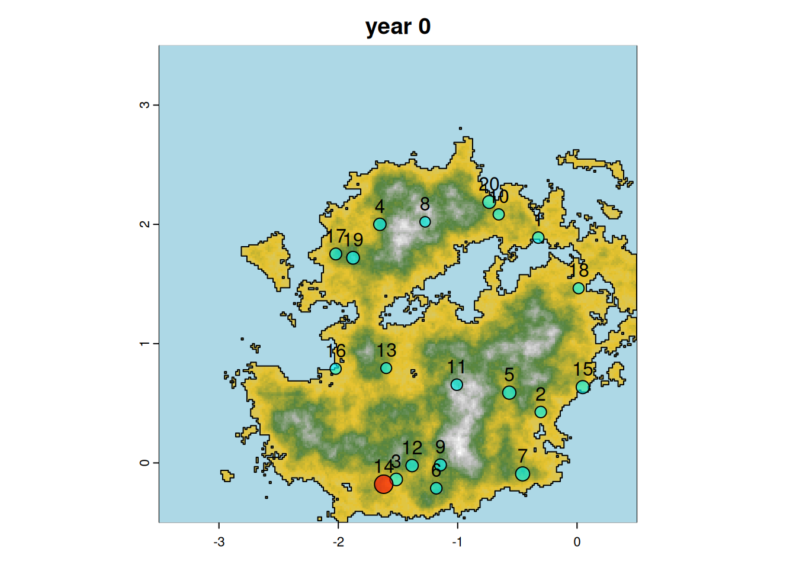
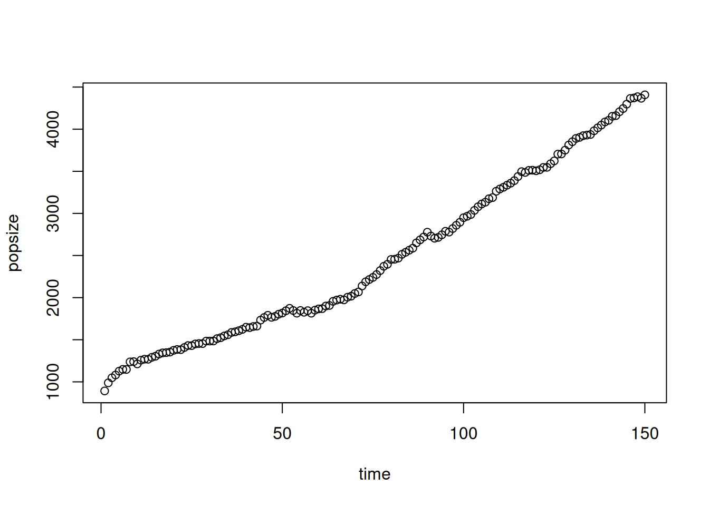
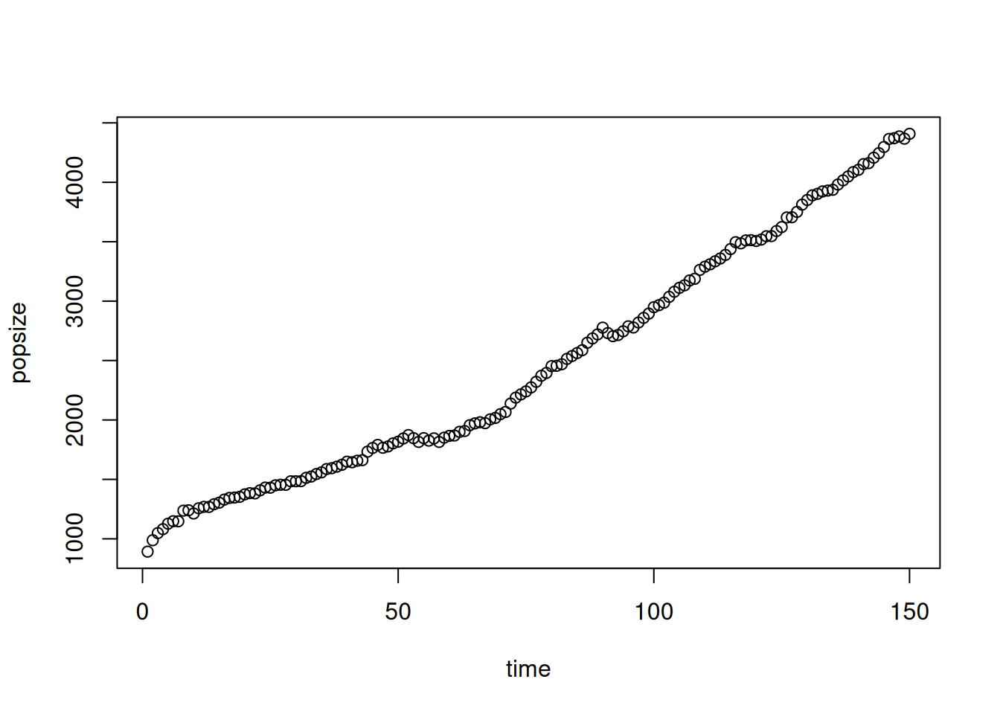

5 Main Simulation
5.1 Initial Parameters
We now have sites with two cultures, a environment and function to make population growth, migrate and engages into wars. Each function depends on a lot of paramaters, some have been reviewd before other are explain in the help of each function. Often the parameters can differs between the two cultures. He we gave a list of parameters, close to those used during the Archaeoriddle challenge:
5.2 Preparation
We will create antoher older data_tmp where we will store useful file, that won’t be shared to everyone but will be used at some point or another.
foldtmp="data_tmp" #We will store all data that can/will be shared with participant in data_toshare
if(!file.exists(foldtmp))dir.create(foldtmp)We setup all paramaters
#initialisation
Kbase=c("HG"=45,"F"=120) #difference in K for the two cultures use and defined before ; will be use in simulation to define new site
# spatial penality for cultural extentions, ie for population to move out of initial site : lower, bigger penality
cul_ext <- c("HG"=7, "F"=6)
# penality of occupational area ie how hard it is to come close to your site ; if low, other sites can come close
penal_cul <- c("HG"=4, "F"=5)
# proba to give birth every year
prob_birth <- c("HG"=0.3, "F"=0.5)
# proba to die when pop > K
prob_survive <- c("HG"=0.8, "F"=0.6)
# proba to create new settlement when Ne > K
prob_split <- c("HG"=0.2, "F"=0.6)
# how big the group of migrant should be to create a new city vs
# migrate to a existing one
minimals <- c("HG"=0.14, "F"=0.20)
# prob to migrate to existing settlement when Ne > K
prob_move <- c("HG"=0.2,"F"=0.1)Let’s see our raster map again, and put the sites on top, with their ids and showing there initial population size:
plotMap(height.ras,height.wat,paste0("year ", 0))
plot(sites, pch=21, add=T, bg=rainbow(2, alpha=0.6)[as.factor(sites$culture)],cex=(1+Nts[1,]/100))
text(sites,pos=3)
The run_simulation function will take the raster data and parameters for defined before for the two different cultures and run for the specified number of years ts (250).
It will then call the functions described above to model contacts between sites, the outcomes of fights and migrations. If you want
5.3 Algorithm
The general organisation of the algorithm is as follow:
initialisation for all sites s: N_s <- growth(N_s) if(N_s>K_s): moving people: if( N_s - K-S > min_s * K_s and probsplit_s): create new city: find the closest most attractive spot and move there else if(proba move ): migration war(s)
1. ** initialisation **
2. for (i in 2:(ts+1))
inactives <- (Nts[i-1,]==0)
for ( s in sample(seq_along(sites)[!inactives]) : #among all active site
N_s <- Gpd()
if $N_s> K_s$ :
migrants <- newN - round(Ks[[s]]*0.9)
if (migrants >= (minimals[sites$culture[s]]*sites$Ks[s]) & runif(1)<prob_split[sites$culture[s]] ){
#if subpopulation > 10 people, 10% chance of creation of a new city
infarea <- (sqrt(tmp)+penal_cul[cultures]) * buffersettl
buffersize <- rnorm(length(infarea), infarea, infarea * 0.1)
buffersize[tmp==0] <- 0
territory <- erase(viable, buffer(sites, buffersize))
if( length(territory)>0 ){
##select a new site given its distance to the old one and the ressourcesource available in ressources
d2 <- logisticdecay( sites[s], dem, x=20000*cul_ext[sites$culture[s]])
w <- (0.7 * d2 + 0.3*ressources) / (0.7*minmax(d2)[2] + 0.3*minmax(ressources)[2])
new_site <- spatSample(
x=mask(
w * logisticdecay(sites[s], dem, k=0.00002,
x=20000*cul_ext[sites$culture[s]]),
territory),
size=1, method="weights", xy=T)[1:2]
new_site <- vect(new_site, geom=c("x","y"))
if ( length(new_site)>0 & all(!is.na(crds(new_site))) ){
##add new site to site listes
Ips[[length(Ips)+1]] <- initpopstruc(n=migrants) #initialise a fake populaition, will be updated by real migrants later
new_site$culture <- sites$culture[s]
new_site$Ks <- round(initKs(
Kbase, sites=new_site, ressources,
sizeex="F", rate=0.45))
sites <- rbind(sites, new_site)
Ks[length(Ks)+1] <- new_site$Ks
}
}
}
## if no creation of new city happen, there is a certain probability that people will move
if( length(new_site)==0 && runif(1) < prob_move[sites$culture[s]] ){
#migration to existing site
att <- extract(ressources,sites)[,2]
space <- sites$Ks - (Nts[i-1,] + migrants)
dis <- extract(logisticdecay(sites[s], dem, k=0.00002, x=1), sites)[,2]
attractivity <- att * space * dis
#attractivity=attractivity*(1+10*(sites$culture[s]==sites$culture)) #4 times more likely to go to similar culture
attractivity[s] <- min(attractivity)-1
attractivity <- exp(attractivity)/sum(exp(attractivity))
attractivity[Nts[i-1,]<10] <- 0
attractivity[sites$culture!=sites$culture[s]] <- 0
if(any(is.na(attractivity))){
print(attractivity)
attractivity[is.na(attractivity)] <- 0
}
city <- sample(size=1, x=seq_along(sites), prob=attractivity)
Nts[i,city] <- Nts[i-1,city] + migrants
}
if( havemoved ){
Ips[c(s,city)] <- changePopSize( loosingPop=Ips[[s]], winingPop=Ips[[city]], size=migrants)
newN <- newN - migrants
}
}
Nts[i,s] <- newN
}
## WAR =======================
potentialfighters <- which(sites$culture=="F" & Nts[i,]>50)
for (s in sample(x=potentialfighters, size=round(length(potentialfighters)*0.1))){
buff <- bufferatack
potentialvictims <- which(sites$culture !=sites$culture[s] & Nts[i,]>0)
clash <- whotouch(s, sites, Ne=Nts[i,], buffersize=buff)
if(length(clash)>0 && !is.na(clash)){
if(length(clash) == 1){
attack <- clash
} else {
attack <- sample(clash, 1)
}
newns <- fightbetterloss(Ne=Nts[i,], a=s, b=attack)
casualties <- sum(Nts[i, c(s,attack)] - newns[c(s,attack)])
warcasualties[i] <- casualties
sizew <- casualties^2/4000
warpoints(sites, s, attack, Ne=Nts[i,],
buffersize=buff, sizewar=sizew+0.5)
#effectively kill people in population (should be done taking into account age pyramid to be more realistic)
Ips[[s]] <- changePopSize(loosingPop=Ips[[s]],
size=(Nts[i,s] - newns[s]))
Ips[[attack]] <- changePopSize(loosingPop=Ips[[attack]],
size=(Nts[i, attack] - newns[attack]))
Nts[i,] <- newns
}
}
return(list(Nts=Nts, warcasualties=warcasualties, Ips=Ips, sites=sites))
}We wrapped all this in a function, run_simulation that return a list of object. Let see one simple example:
ts <- 150 # we keep using 250 time steps.
onesimu <- run_simulation(
sites=sites, viable=viable, dem=height.ras,
ressources=ress,
water=height.wat,
foldervid=NULL,
visu=F, visumin=T,
log=F,
ts=ts, #length of simulation in year
Kbase=c("HG"=35, "F"=110), #difference in K for the two cultures
cul_ext=c("HG"=7, "F"=6), #spatial penality to extent: lower, bigger penality
penal_cul=c("HG"=4, "F"=5), #penality of occupational area: low, other sites can cam close
prob_birth=c("HG"=0.4, "F"=0.75), #proba of giving birth every year
prob_survive=c("HG"=0.8, "F"=0.65), #proba of dying when pop > K
prob_split=c("HG"=0.5, "F"=0.6), #proba of creating a new settlement when Ne > K
minimals=c("HG"=0.14,"F"=0.20), #how big the group of migrant should be to create a new city vs migrate to a existing one
probfight=0.5, #this has been added for the bookdown to increase conflict occurences ; it is of 0.1 in the original challenge, it allows to modulate the probability that any settlement in a position of conflict actually goes to war.
bufferatack=1000, #distance max around which settlement can fight
prob_move=c("HG"=0.2, "F"=0.1) #proba of migrating to existing settlement when Ne > K
)Figure 5.1: quick animation showing the simulation run in the previous chunk. Size o the dot represent the size of the settlement, the color its culture, where red represents farmers and blue hunter-gatherer. Flame represent fight between settlement, the size of the flame being proportional to the total number of casualties during the conflict (both sides included).
Note that we here use a larger bufferatack that generates more conflicts and higher birth rates to make this simulation
To create your own video of the simulation you can replace foldervid=NULL by foldervid=foldtmp or any other folder you want. this will save all output in the folder you specify, and you can use the image to generate your video using, for exemple, ffmpeg.
We also save the different object generated by run_simulation to be able to re-load it, share it, analyse it, later.
#write the terra SpatVect that stores all site sites location
terra::writeVector(onesimu$sites,file.path(foldtmp,"allsites.shp"),overwrite=TRUE)
#write the matrix with all the population for all sites and all time steps
saveRDS(file=file.path(foldtmp,"popSizeMatrix.RDS"),onesimu$Nts)
#write a list that stores all the population structure for the sites at the end of the simulation
saveRDS(file=file.path(foldtmp,"popStructList.RDS"),onesimu$Ips)
#write a vector that stores the number of death due to conflict at each time step
saveRDS(file=file.path(foldtmp,"wardeath.RDS"),onesimu$warcasualties)Source code
Check the code of the simulation functions here:Show code
Code
## Function 17. Change population sizes
changePopSize <- function(loosingPop, size, winingPop=NULL, new=F,
method="random", probs=dnorm,
prob.option=list("sd"=10, "mean"=22)) {
#print(dim(loosingPop))
#if(!is.null(winingPop))
# print(dim(winingPop))
#if(length(size)==0 || size==0)return(data.frame(Age=numeric(),Sex=character()))
if(nrow(loosingPop)==0){
kill <- 0
}else if(method=="random"){
kill <- tryCatch(
sample(x=1:nrow(loosingPop), size=size,
prob=probs(loosingPop$Age, mean=prob.option$mean, sd=prob.option$sd)),
error=function(e){
print(paste0("problem with population replacement for settlement of size:",
nrow(loosingPop), " need to loose ", size));0
}
)
}
#print(paste("diff",nrow(popdistrib)-size,"new",size))
if(!is.null(winingPop)){
winingPop <- rbind(winingPop, loosingPop[kill,])
}
loosingPop <- loosingPop[-kill,]
if(!is.null(winingPop))
return(list(loosingPop, winingPop))
else
return(loosingPop)
}
## Function 18. Check sites touching
whotouch <- function(i, sites, Ne, homophily=F, buffersize=200){
touch <- st_intersects(
st_make_valid(st_as_sf(buffer(sites[i], Ne[i] * buffersize+0.00001))),
st_make_valid(st_as_sf(buffer(sites, Ne * buffersize+0.00001))))
if( length(touch) > 0 ){
enemies <- unlist(touch)
if(homophily){
enemies <- enemies[enemies != i]
} else {
enemies <- enemies[sites$culture[enemies] != sites$culture[i]]
}
} else {
enemies <- NA
}
#after adding a small number to zero, does that means that often some zero size group may be taken as fighter? checking below if this happen
if(sum(Ne[enemies]==0)>0){
print("some already dead enemies")
print(which(Ne[enemies]==0))
enemies=enemies[Ne[enemies]>0]
}
return(enemies)
}
## Function 19. Model a simple fight
simplefight <- function(Ne, a, b){
if(runif(1) < Ne[a] / (Ne[a] + Ne[b])){
v <- a
l <- b
}
else{
v <- b
l <- a
}
# Keep the original pop sizes for reporting outcome
one <- Ne
# Update population sizes using a binomial
Ne[v] <- rbinom(n=1, prob=0.9, size=Ne[v])
Ne[l] <- rbinom(n=1, prob=0.4, size=Ne[l])
print(
paste("victory", v, "(", one[v], "-", Ne[v],") over", l,
"(",one[l],"-",Ne[l],"), total of: ", (one[v]-Ne[v]) + (one[l]-Ne[l]), "people"))
return(Ne)
}
## Function 20. Model fight with better probabilities
fightbetterloss <- function(Ne,a,b,log=F){
if( runif(1) < Ne[a]/(Ne[a] + Ne[b]) ){
v <- a
l <- b
}
else{
v <- b
l <- a
}
one <- Ne
Ne[v] <- rbinom(n=1, prob=1 - Ne[l]/(Ne[v] + Ne[l]), size=Ne[v])
Ne[l] <- rbinom(n=1, prob=1 - Ne[v]/(Ne[v] + Ne[l]), size=Ne[l])
if(log)print(paste0("victory ", v, "(", one[v], "-", Ne[v],") over ", l,
" (", one[l], "-", Ne[l], "), tot: ", (one[v]-Ne[v]) + (one[l]-Ne[l]), "losses"))
return(Ne)
}
## Function 21. Draw a war symbol where two clans are fighting
warpoints <- function(sites, a, b, Ne, buffersize=300, plot=T, sizewar=2){
meetpoints <- crop(
buffer(sites[a], 1+Ne[a] * buffersize),
buffer(sites[b], 1+Ne[b] * buffersize)
)
if( length(meetpoints)>0 ){
p <- terra::spatSample(meetpoints, 1)
if(plot & length(p)>0){
plot(p, add=T, bg="red", pch="🔥", cex=sizewar+1,
col=adjustcolor("yellow", 0.1))
plot(p, add=T, bg="yellow", pch="⚔️" ,cex=sizewar)
}
return(p)
}
else return(NULL)
}
## Function 22. Run simulation
run_simulation <- function(cultures=NULL,
viable=NULL,
sites=NULL,
dem=NULL,
ressources=NULL,
water=NULL,
foldervid=NULL,
visu=FALSE,
visumin=TRUE,
probfight=0.1,
log=F,
ts=20000,
Kbase=c("HG"=35, "F"=120),
cul_ext=c("HG"=7, "F"=6),
penal_cul=c("HG"=4, "F"=5),
prob_birth=c("HG"=0.3, "F"=0.5),
prob_survive=c("HG"=0.8, "F"=0.6),
prob_split=c("HG"= .2, "F"=0.6),
prob_move=c("HG"=0.2, "F"=0.1),
minimals=c("HG"=.14, "F"=.20),
bufferatack=400,
buffersettl=2000,
Nts=NULL,
Ips=NULL
){
## Run stochastic process
wplot <- F
if(visumin || visu) wplot <- T
Ks <- sites$Ks
cultures <- sites$culture
if(is.null(Nts)){
INs <- round(runif(length(sites), 0.85, 0.95) * sites$Ks) #Population size at initialisation
Ips <- lapply(INs, initpopstruc) #initialise population structure for all sites
Nts <- initlistsites(Ips, ts=ts)
frame <- 0
mint <- 2
} else {##should check and test howto start back a simulation
mint <- nrow(Nts)
frame <- nrow(Nts)
}
### visualisation =====
if(visu && !is.null(foldervid) && !dir.exists(foldervid))
dir.create(foldervid)
###
warcasualties <- vector("integer", ts)
for (i in 2:(ts+1)){
countcult <- table(sites$culture[Nts[i-1, ] > 0])
if ( length(countcult) != 2 ) {
return(
list(Nts=Nts[,1:i],
warcasualties=warcasualties[1:i],
Ips=Ips,
sites=sites
)
)
}
if(log){
print(
paste("year", i, "total", sum(sapply(Ips,nrow)),
"with", length(sites), "sites (",
paste0(paste(names(countcult), countcult, sep=":"), collapse=","), ")"))
}
if (visumin){
### visualisation =====
frame <- frame+1
if(!is.null(foldervid)){
filename <- sprintf("map_%06d.png", frame)
png(file.path(foldervid,filename), width=800, height=800, pointsize=20)
}
plotMap(dem, water, paste0("year ",i))
########
}
inactives <- (Nts[i-1,]==0)
for ( s in sample(seq_along(sites)[!inactives]) ){
if ( visu ) {
### visualisation =====
frame <- frame+1
filename <- sprintf("map_%08d.png", frame)
png(file.path(foldervid,filename), width=800, height=800, pointsize=20)
plotMap(dem,water,paste0("year ", i))
########
}
city <- NULL
Ips[[s]] <- Gpd( #compute new population for the sites
Ips[[s]], K = Ks[[s]],
p_offspring = prob_birth[sites$culture[s]],
prob = prob_survive[sites$culture[s]]
)
newN <- nrow(Ips[[s]]) #count population size
if(newN >= (Ks[[s]])){ #if new population is more than carrying capacity: migration scenario
migrants <- newN - round(Ks[[s]]*0.9)
##Creation of new city
new_site <- NULL
#if(sites$culture[s]=="F")print(paste("possib",migrants, (minimals[sites$culture[s]]*sites$Ks[s])))
tmp <- Nts[i-1,]
tmp[Nts[i,] > 0] <- Nts[i, Nts[i,] > 0]
#tmp=tmp+sqrt(sites$Ks)
havemoved <- F
if (migrants >= (minimals[sites$culture[s]]*sites$Ks[s]) & runif(1)<prob_split[sites$culture[s]] ){
#if supopulation > 10 people, 10% chance of creation of a new city
#print(paste("look for new spot for ",migrants, "from site",s,"culture",sites$culture[s]))
#mean of area of influence
infarea <- (sqrt(tmp)+penal_cul[cultures]) * buffersettl
buffersize <- rnorm(length(infarea), infarea, infarea * 0.1)
buffersize[tmp==0] <- 0.00001
territory <- erase(viable, buffer(sites, buffersize))
if( length(territory)>0 ){
#print(paste("found new spot",migrants))
##select a new site given its distance to the old one and the ressourcesource available in ressources
d2 <- logisticdecay(
sites[s], dem, x=20000*cul_ext[sites$culture[s]]
)
w <- (0.7 * d2 + 0.3*ressources) / (0.7*minmax(d2)[2] + 0.3*minmax(ressources)[2])
new_site <- terra::spatSample(
x=mask(
w * logisticdecay(sites[s], dem, k=0.00002,
x=20000*cul_ext[sites$culture[s]]),
territory),
size=1, method="weights", xy=T)[1:2]
new_site <- vect(new_site, geom=c("x","y"))
if ( length(new_site)>0 & all(!is.na(crds(new_site))) ){
##add new site to site listes
##initialise population struc of new site
#print(paste("total sites:",length(Ips)))
#print(paste("dim Nts:",dim(Nts)[2]))
#print(paste("site sf Nts:",length(sites)))
Ips[[length(Ips)+1]] <- initpopstruc(n=migrants) #initialise a fake populaition, will be updated by real migrants later
new_site$culture <- sites$culture[s]
new_site$Ks <- round(initKs(
Kbase, sites=new_site, ressources,
sizeex="F", rate=0.45))
if(log){
print(paste0("new settlement (", sites$culture[s], ") of K ",
new_site$Ks, " and pop ", migrants))
}
sites <- rbind(sites, new_site)
Ks[length(Ks)+1] <- new_site$Ks
city <- length(Ips)
Nts <- cbind(Nts, rep(0,ts+1))
Nts[i, city] <- migrants
cultures <- c(cultures, cultures[s])
#print(paste("new site sf Nts:",length(sites)))
#print(paste("new dim Nts:",dim(Nts)[2]))
#print(paste("new total sites:",length(Ips)))
havemoved <- T
}
}
}
## if no creation of new city happen, there is a certain probability that people will move
if( length(new_site)==0 && runif(1) < prob_move[sites$culture[s]] ){
#getj
att <- extract(ressources,sites)[,2]
space <- sites$Ks - (Nts[i-1,] + migrants)
dis <- extract(logisticdecay(sites[s], dem, k=0.00002, x=1), sites)[,2]
attractivity <- att * space * dis
#attractivity=attractivity*(1+10*(sites$culture[s]==sites$culture)) #4 times more likely to go to similar culture
attractivity[s] <- min(attractivity)-1
attractivity <- exp(attractivity)/sum(exp(attractivity))
attractivity[Nts[i-1,]<10] <- 0
attractivity[sites$culture!=sites$culture[s]] <- 0
if(any(is.na(attractivity))){
if(log)print(attractivity)
attractivity[is.na(attractivity)] <- 0
}
city <- sample(size=1, x=seq_along(sites), prob=attractivity)
Nts[i,city] <- Nts[i-1,city] + migrants
if(log){
print(paste(migrants, "migrant from", sites$culture[s],
"to", sites$culture[city]))
}
havemoved <- T
}
if( havemoved ){
#print(paste("old spot",migrants," for ",nrow(Ips[[s]])))
#print(paste("old new spot",migrants," for ",nrow(Ips[[city]])))
#if(city>length(Ips))print(paste("problem, migrants:",migrants))
#print(paste("the other:",city))
Ips[c(s,city)] <- changePopSize(
loosingPop=Ips[[s]], winingPop=Ips[[city]], size=migrants
)
newN <- newN - migrants
#print(paste("loosing ",newN," vs ",nrow(Ips[[s]])))
#print(paste("wining ",newN," vs ",nrow(Ips[[city]])))
}
}
Nts[i,s] <- newN
if (visu){
###visualisation=========
sitescols <- rep(1,length(sites))
siteslwd <- rep(1,length(sites))
ii=NULL
if(!is.null(city)){
sitescols[s] <- "yellow"
sitescols[city] <- "red"
siteslwd[s] <- 3
siteslwd[city] <- 3
ii <- st_cast(st_combine(st_as_sf(sites[c(s, city)])), "LINESTRING")
}
if (!is.null(ii)){
plot(ii ,add=T)
}
tmp <- Nts[i-1,]
tmp[Nts[i,]>0] <- Nts[i,Nts[i,]>0]
plot(sites, cex=(as.integer(Nts[i,]>0) * 0.3 + Nts[i,]/200),
pch=21, add=T, bg=rainbow(2, alpha=0.6)[as.factor(sites$culture)],
lwd=siteslwd, col=sitescols)
dev.off()
###=======================
}
}
if(visumin){
plot(sites, cex=(as.integer(Nts[i,]>0) * 0.3 + Nts[i,]/200),
pch=21, add=T, bg=rainbow(2, alpha=0.6)[as.factor(sites$culture)])
}
potentialfighters <- which(sites$culture=="F" & Nts[i,]>50)
for (s in sample(x=potentialfighters, size=round(length(potentialfighters)*probfight))){
buff <- bufferatack
potentialvictims <- which(sites$culture !=sites$culture[s] & Nts[i,]>0)
clash <- whotouch(s, sites, Ne=Nts[i,], buffersize=buff)
clash=clash[!is.na(clash)]
if(length(clash)>0 ){
if(length(clash) == 1){
attack <- clash
} else {
attack <- sample(clash, 1)
}
newns <- fightbetterloss(Ne=Nts[i,], a=s, b=attack,log=log)
casualties <- sum(Nts[i, c(s,attack)] - newns[c(s,attack)])
warcasualties[i] <- casualties
sizew <- casualties^2/4000
if(wplot){ #warplot could be use to deposit evidence of conflicts
warpoints(sites, s, attack, Ne=Nts[i,],
buffersize=buff, sizewar=sizew+0.5,plot=wplot)
}
#effectively kill people in population (should be done taking into account age pyramid to be more realistic)
Ips[[s]] <- changePopSize(loosingPop=Ips[[s]],
size=(Nts[i,s] - newns[s]))
Ips[[attack]] <- changePopSize(loosingPop=Ips[[attack]],
size=(Nts[i, attack] - newns[attack]))
Nts[i,] <- newns
if(log){
print(paste0("fight : #", s, " (",
cultures[s], ") left with ", Nts[i,s],
" (bef:", Nts[i-1,s], ") ind., attacked: #", attack, " (",
cultures[attack], ") left with ", Nts[i,attack],
" (bef:", Nts[i-1,attack],") ind., #death=",casualties))
}
}
}
if(visumin && !is.null(foldervid)) dev.off()
}
return(list(Nts=Nts, warcasualties=warcasualties, Ips=Ips, sites=sites))
}5.4 Explore simulation
The list onesimu contains a few interesting info:
Nts <- onesimu$Nts # population at each timestep
warcasualties <- onesimu$warcasualties #death by war at each time stepNts is a \(n \times m\) matrix where n is the number of time step of the simulaiton, and m the total number of sites that appears during the simulation, including the one that diseapers.
With this Nts matrix we can already see a couple of thing: ncol(Nts)= 122, the total number of place occupied and other in the next chunk:
indmax=which(max(Nts)==Nts,arr.ind = T)
indmax[1] #timestep when biggest settlement was the biggest
## [1] 80
indmax[2] #id of the biggest settlement
## [1] 3
max(Nts) #max number of people during the simulation
## [1] 272We can also look at the dynamics throught time, and explore how each individual sites are growing:
i <- ts
plot(1, 1, type="n", xlim=c(0,i), ylim=c(0,max(Nts)), xlab="time", ylab="popsize")
nill <- lapply(1:ncol(Nts),function(j)lines(Nts[,j]))
plot(apply(Nts, 1, sum)[1:i], xlab="time", ylab="popsize") 

Figure 5.2: left: Growth of each site, right: overall growth
Combing onesimu$site with Nts we can compare the initial condition with the state of the worldat the end:
plot(onesimu$site, cex=(Nts[1,]/max(Nts))*10, pch=21, bg=rainbow(2, alpha=0.6)[as.factor(onesimu$site$culture)])
plot(onesimu$site, cex=(Nts[nrow(Nts),]/max(Nts))*10, pch=21, bg=rainbow(2, alpha=0.6)[as.factor(onesimu$site$culture)])Figure 5.3: left: sites at initialisation, right: sites at the end of the simulation
Or look at the dynamics through time but divided by culture, and comparing with the war casualties
plot(warcasualties[1:(i-1)], lwd=2, col="green", type="h", yaxt="n", ylab="") # Plot war casualties
par(new=T)
plot(1, 1, type="n", xlim=c(0,i), ylim=c(0,max(Nts)), xlab="time", ylab="popsize")
na=lapply(1:ncol(Nts),
function(i)lines(Nts[,i], col=c("red","blue")[as.factor(sites$culture)[i]]))
plot(warcasualties[1:(i-1)], lwd=2, col="green", type="h", yaxt="n", ylab="") # Plot war casualties
par(new=T)
growF <- apply(Nts[1:(i-1), sites$culture=="F",drop=F], 1, sum) # Sum of 'F' culture values excluding last row
growHG <- apply(Nts[1:(i-1), sites$culture=="HG",drop=F], 1, sum) # Sum of 'HG' culture values excluding last row
plot(growF, col="red", type="l", lwd=2, ylim=c(0, max(growF, growHG))) # Plot growth of 'F' culture
points(growHG, col="blue", lwd=2, type="l") # Add points for growth of 'HG' culture
legend("topleft",legend=c("F","HG","war"),col=c("red","blue","green"),lwd=1,title="culture")Figure 5.4: left: Growth of eachsite for both culturles, right: combined growth
The dynamics of the simulations will heavily depend on the initial conditions and the parameters. As an example, with these parameters, it is not rare that the Farmers, due to the conflict mechanisms that we described in Chapter 4, will destroy themselves by going to war too often, as one can see in the Figure 5.6 below. This can be avoided with the current implementation by setting a small probfight value to 0.1; however, it is important to remember that this could have been achieved in various ways. A more clever approach would have been for Farmers to ‘estimate’ the likelihood of them losing the battle, perhaps by fighting only safe battles, against much smaller settlements.
In order to find the right simulation, the one that will show the dynamics you want your participants to detect, you will need to play with these parameters and run several replications of the simulation in order to find the right one.
The script scriptmini.R was designed to do so for the original challenge, here we adapted it for a more generic need, to re-run simulation using the world you have generated throughout this book.
par(mar=c(0,0,0,0))
height.ras=rast("data_toshare/dem_raster.tiff")
height.wat=height.ras
height.wat[height.wat>mean(height.wat[])]=NA
height.groups=height.ras
maxh=max(height.ras[],na.rm=T)
height.groups[height.groups<mean(height.groups[])]=NA
height.groups[height.groups<(maxh*.7)]=1
height.groups[height.groups>(maxh*.7)]=200
height.groups[is.na(height.groups)]=-1
height.poly=as.polygons(height.groups)
viable=makeValid(height.poly[2,])
sites=vect("data_tmp/allsites.shp")
ts=10
allsim=list() #we will store te multiplesimulation, in this list to play with it, with a proper setup we stored results in files as simulation are too big to be kept in memory.
for(expname in paste0("exp",1:9)){
print(paste0("Starting simulation ",expname))
onesimu=run_simulation (
sites=sites, viable=viable, dem=height.ras,
ressources=ress,
water=height.wat,
foldervid=NULL,
visu=F, visumin=F,
log=F,
ts=ts,
Kbase=c("HG"=35, "F"=110),
cul_ext=c("HG"=7, "F"=6),
penal_cul=c("HG"=4, "F"=5),
prob_birth=c("HG"=0.4, "F"=0.75),
prob_survive=c("HG"=0.8, "F"=0.65),
prob_split=c("HG"=0.5, "F"=0.6),
minimals=c("HG"=0.14,"F"=0.20),
probfight=0.5,
bufferatack=1000,
prob_move=c("HG"=0.2, "F"=0.1)
)
Nts=onesimu$Nts
warcasualties=onesimu$warcasualties
sites=onesimu$sites
i=min(ts,which(apply(Nts,1,sum)==0))
saveRDS(file=file.path(foldtmp,paste0(expname,"_all.RDS")),onesimu)
saveRDS(file=file.path(foldtmp,paste0(expname,"_sitesRast.RDS")),onesimu$sites)
plotMap(height.ras,height.wat,paste0("year ",i))
plot(sites,cex=(as.integer(Nts[i,]>0)*0.3+Nts[i,]/200),pch=21,add=T,bg=rainbow(2,alpha=.6)[as.factor(sites$culture)])
growF=apply(Nts[1:i,sites$culture=="F"],1,sum)
growHG=apply(Nts[1:i,sites$culture=="HG"],1,sum)
growT=apply(Nts[1:i,],1,sum)
allsim[[expname]]=cbind.data.frame(growF,growHG,growT,warcasualties[1:i],rep(expname,i))
}
## [1] "Starting simulation exp1"
## [1] "Starting simulation exp2"
## [1] "Starting simulation exp3"
## [1] "Starting simulation exp4"
## [1] "Starting simulation exp5"
## [1] "Starting simulation exp6"
## [1] "Starting simulation exp7"
## [1] "Starting simulation exp8"
## [1] "Starting simulation exp9"
Figure 5.5: Final state of multiple simulations with the exact same parameters.
gnmax=max(sapply(allsim,function(i)max(i$growT)))
plot(1,i,xlim=c(0,10),ylim=c(0,gnmax),type="n",main="Overal growth",ylab="number of individual",xlab="time")
na=lapply(allsim,function(i)lines(i$growT))
gnmax=max(sapply(allsim,function(i)max(i[,c("growF","growHG")])))
plot(1,i,xlim=c(0,10),ylim=c(0,gnmax),type="n",main="Growth per culture",ylab="number of individual",xlab="time")
na=lapply(allsim,function(i){lines(i$growHG,col="red");lines(i$growF,col="green")})
gnmax=max(sapply(allsim,function(i)max(i$warcasualties)))
plot(1,i,xlim=c(0,10),ylim=c(0,gnmax),type="n",main="War Casualties",ylab="number of individual",xlab="time")
na=lapply(allsim,function(i)lines(i$warcasualties))Figure 5.6: Comparing multiple runs
Once you found the right simulation we can use the populations this simulaiton created to generated an archaeological records, based on law we will describe in the next chapter.